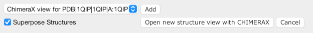

Discovering and Viewing PDB and 3D-Beacons structures
Jalview can be used to explore the 3D structures of sequences in an alignment by following the steps below:
Structure Viewers in the Jalview Desktop
The
Jmol viewer has been included since Jalview
2.3. Jalview 2.8.2 included support for Chimera,
provided it is installed and can be launched by Jalview. ChimeraX and PyMOL
support is included from Jalview 2.11.2. The default
viewer can be configured in the Structure
tab in the Tools→Preferences dialog box.
Structure data imported into Jalview can also be processed to display secondary structure and temperature factor annotation. See the Annotation from Structure page for more information.
Controlling where the new structures
will be shown

The Structure Chooser offers several options
for viewing a structure.
The Open new structure view button will open a new
structure viewer for the selected structures, but if there are views
already open, you can select which one to use, and press the Add
button. Jalview can automatically superimpose new structures based
on the linked alignments - but if this is not desirable, simple
un-tick the Superpose Structures checkbox.
Superposing structures
Jalview superposes structures using
the visible portions of any associated sequence alignments. A
message in the structure viewer's status bar will be shown if not
enough aligned columns were available to perform a superposition.
See the Jmol and Chimera help pages for more information about their capabilities.
Retrieving sequences from the PDB
You can
retrieve sequences from the PDB using the Sequence Fetcher. The sequences
retrieved with this service are derived directly from the PDB 3D
structure data, which can be viewed in the same way above. Secondary
structure and temperature factor annotation can also be added.
Jalview will also read PDB files directly - either in PDB
format, or mmCIF. Simply load in the file
as you would an alignment file. The sequences of any protein or
nucleotide chains will be extracted from the file and viewed in the
alignment window.
Associating a large number of PDB files to
sequences in an alignment
It is often the case when working
with structure alignments that you will have a directory of PDB
files, and an alignment involving one or more of the structures. If
you drag a number of PDB files onto an alignment in the Jalview
desktop, Jalview will give you the option of associating PDB files
with sequences that have the same filename. This means, for example,
you can automatically associate PDB files with names like '1gaq.pdb'
with sequences that have an ID like '1gaq'.
Note:
This feature was added in Jalview 2.7
Note for Jalview applet users:
Due to the applet
security constraints, PDB Files can currently only be imported by
cut and paste of the PDB file text into the text box opened by the
'From File' entry of the structure menu.
Viewing the PDB Residue Numbering
Sequences which have PDB entry or PDB file associations are
annotated with sequence features from a group named with the
associated PDB accession number or file name. Each feature gives the
corresponding PDB Residue Number for each mapped residue in the
sequence. The display of these features is controlled through the "View→Sequence
Features" menu item and the Feature
Settings dialog box.
Switching between mmCIF and PDB format for
downloading files from the PDB
Jalview now employs the mmCIF format for importing 3D structure data
from flat file and EMBL-PDBe web-service, as recommended by the
wwwPDB. If you prefer (for any reason) to download data as PDB files
instead, then first close Jalview, and add the following line to
your .jalview_properties file:
PDB_DOWNLOAD_FORMAT=PDB
When this setting is configured, Jalview will only request
PDB format files from EMBL-EBI's PDBe.
mmCIF format
file support was added in Jalview 2.10.
Outstanding problem with cut'n'pasted
files in Jalview 2.6 and Jalview 2.7
Structures imported
via the cut'n'paste dialog box will not be correctly highlighted
or coloured when they are displayed in structure views, especially
if they contain more than one PDB structure. See the bug report at
http://issues.jalview.org/browse/JAL-623 for news on this problem.